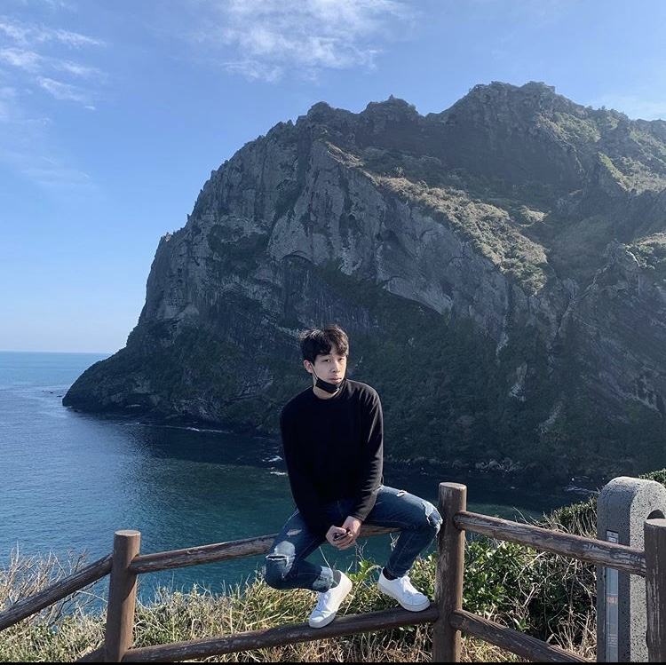

나 파평윤씨 소정공파 38대손 燮자 돌림을 쓰는 족보있는 '윤두섭' 다른말로 '레오나르두 섭빈치' 1995년 5월 11일 00시 38분경 서울 삼성병원에서 출생, 출생당시 간호사의 증언에 의하면 마른하늘에서 벼락을 목격. 2남중 장남.
어린시절을 외조부모 밑에서 자라며 예의범절을 배움. 유치원시절을 서울에서 보내며 자신은 서울에만 갇혀있을 인재가 아님을 깨닫고 8살에 부산으로 이사.
서면의 꿀주먹이라 불리며 질풍같은 학창시절을 보냄. 어떤일이든 마음먹으면 죤내 열심히하지. 그는 힘든 가정형편을 딛고 대한민국 명문사학 연세대학교에 15년도 당당히 입학.
군생활을 대한민국 육군의 중심부 논산 육군훈련소에서 장병을 육성하는 조교로 1년 7개월 생활. 군생활중에 어떠한 사건사고 없이 전역했으며 그는 많은 표창장과 함께 동료들의 환호가 그와 함께했다. 군생활 이후 '연어상회'에서 극한의 멀티테스킹을 이용해 홀의 지배자로 4개월간 활동하였다. 태권도2단 검도1단 구구단 6단 눈치 213단 주량 소주3잔 헬스 1달차. 자칭 '성장하는 괴물' 그의 성장은 어디까지인가....사람들은 그에게 두폴레옹, 두빈치, 두비, 윤선생, 두드래곤, 두드러기 등 여러가지 별명을 붙여주었지.. 바로 '두려움'의 상징.... 그 두려움에 여성들은 쉽게 그에게 다가오지 못했고 윤두섭은 곧 대마법사의 반열에 오를 예정이다. 그는 효심또한 지극하여 여름방학 남들이 의미없는 시간을 보낼 때 어머니를 모시고 전국방방곳곳을 떠돌아다니며 백종원의 삼대천왕, 골목식당에 나온 음식들을 먹으러 다녔다. 한번 윤두섭이 떴다하면 그 일대의 음식점들은 모두 긴장의 끈을 놓치 못했다고 한다. 또한 김밥 단체주문이 들어오면 어쩔수 없이 들어오는 지원요청을 흔쾌히 수락하며 김밥 500줄을 2시간만에 만들어 포장까지하는 '두세의 기적'을 실현하기도 했다.